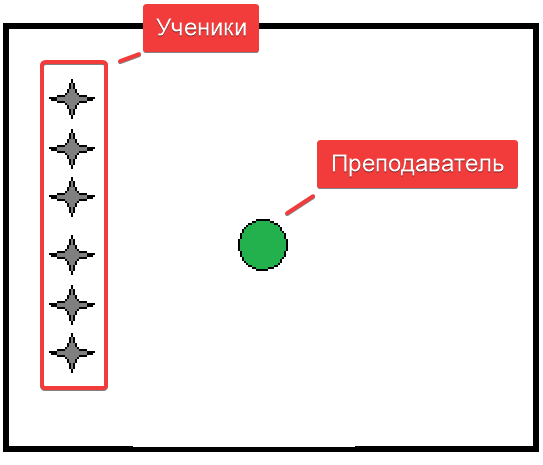

| № |
Частные задачи |
Содержание |
Дозировка |
ОМУ |
| I |
|
Подготовительная на часть |
12` |
|
| 1 |
Способствовать организации учащихся
Постановка учебной цели урока
|
Построение, приветствие, перекличка |
30`` |

Обратить внимание на физическое состояние и форму занимающихся
|
|
Сообщение задач урока |
30'' |
создать общую атмосферу занятия |
| 2 |
Способствовать профилактика плоскостопии и сколиоза |
Ходьба и её разновидности: |
2` |
Темп средний, спина прямая, дистанция 2 шара |
|
- На носках |
20'' |
Руки на пояс |
| - На пятках |
20'' |
Руки за голову |
| - На внутренней стороны стопы |
20'' |
Руки в сторону |
| - На внешней стороне стопы |
20'' |
Руки вперед |
| - Перекатом с пятки на носок |
20'' |
Руки за голову |
| - Полуприседе |
20'' |
Руки на пояс |
| 3 |
Способствовать разминки мышц нижних конечностей |
Бег и её разновидности: |
2` |
Темп средний, спина прямая, дистанция 2 шара |
|
- С высоким подниманием бедра |
20'' |
Бетро поднимать под 90 градусов |
| - Захлестывает голени |
20'' |
Руки работают как при обычном беге |
| - Приставным шагом правым боком |
20'' |
Руки работают снизу в сторону |
| - то же левом боку |
20'' |
| - Скрестным шагом правым боком |
20'' |
Руки в стороны |
| - То же левым боком |
20'' |
| 4 |
Способствует подготовке организма к основной части урока |
Прыжки и его разновидности: |
2` |
Темп средний, спина прямая, дистанция 2 шара, способствувать повышение ЧСС (120 уд/мин) |
|
- Прыжки на правой с продвижением вперед |
20'' |
Руки помогают вытолковать туловище вверх |
| - Прыжки на левый с продвижением вперед |
20'' |
| - Бег с ускорением |
2 x 15m |
Частота движения рук максимальная |
| 5 |
Восстановить дыхание |
Ходьба: |
30`` |
Темп cпокойной, спина прямая, дистанция 2 шара |
|
Упражнение на восстановление дыхания |
|
|
1 - 2 - руки вверх
3 - 4 - руки вверх |
|
Вдох
Выдох |
| 6 |
Способствовать повышению подвижности суставов верхнего плечевого пояса |
ОРУ в движении |
3` |
Темп cпокойной, спина прямая, дистанция 2 шара |
|
И. П. - Руки вперед
1 - 4 - Круговые движения кистями внутрь
5 - 8 - То же наружу
|
4 раза |
Кисть натянута, руки суставах не сгибать |
И. П. - Руки в стороны
1 - 4 - Круговое движение предплечье внутрь
5 - 8 - то же наружу |
4 раза |
Амплитуда движения чуть ниже максимальной |
И. П. - Руки перед грудью
1 - 2 - Отведение согнутых рук назад
3 - 4 - Доведение прямых рук
назад |
4 раза |
И. П. - Руки вверх
1 - 4 - Круговые движения руками вперёд
5 - 8 - То же назад |
4 раза |
| Способствовать разминки мышц туловища и нижних конечностей |
Ходьба выпадами с поворотом туловища в сторону к переди стоящей ноге |
30'' |
Задняя стоящая нога натянута |
| Ходьба наклонными к переди стоящей ноге |
30'' |
Ноги не сгибать, амплитуда максимальная |
| 7 |
|
Перестроение |
30`` |
В колонну по 5, дистанция 1.5 шага
|
| II |
|
Основная часть |
28` |
|
|
|
Эстафети: |
|
|
| 1 |
Способствовать развитию внимательности, ловкости |
"Подарок" |
2 раза |
Для каждой команды готовится по коробке, в которую плотно укладывается мишура, а на дно помещается несколько ирисок.
По команде первые игроки запускают руку в коробку и вытаскивают по одной конфете, затем передают коробки вторым участникам.
Побеждает команда, первой нашедшая все конфеты. |
| 2 |
Способствует развитию координационных способностей и взаимодействия между командой |
"Принеси яблоко" |
1 раз |
Первые два игрока получают по чайной ложке.
На расстоянии 8 шагов на двух стульях лежит по бутафорскому яблоку. Первые игроки с ложками бегут к стульям и без помощи рук укладывают яблоки на ложки.
Затем бегут с ними обратно и также без помощи рук перекладывают яблоки на ложки вторых игроков, а свои ложки передают третьим.
Вторые бегут с яблоками к стульям, обегают их и перекладывают яблоки третьим номерам и т. д. Если яблоко упадет, то игрок должен при помощи своей ложки поднять его и продолжить игру.
Победители и побежденные в награду получают по настоящему яблоку. |
| 3 |
|
"С воздушным шаром" |
2 раза |
Перед колоннами команд ставится по 8 булав на расстоянии 1м. Первому игроку вручается тарелка с воздушным шариком.
По сигналу ведущего начинается бег между булавами. Выигрывает команда, которая быстрее справится с эстафетой.
|
| 4 |
|
"Сани-тачки" |
1 раз |
Эстафета, для участия в которой игроки команд делятся на пары. Один человек из пары лежит на санках на животе, второй держит его ноги и толкает вперед.
Побеждает команда, чьи «тачки» быстрее закончат движение. |
|
|
"Шаромания" |
2 раза |
Для проведения эстафет необходимы воздушные шары круглые и длинные для моделирования.
Два игрока получают по длинному шару, с их помощью вдвоем несут один шар зажав его двумя длинными шарами, и кладет в ведро на финише.
Затем возвращаются на старт передавай следующей паре длинные шары, цикл снова повторяется.
Если пар нечётное количество капитан берет на себя ответственность и бежит ещё раз |
| 6 |
|
"Трудная ноша" |
1 раза |
Игрокам (по 2 от каждой команды) выдают 2 палочки длиной 0,5 м и дощечку длиной 70-75 см с укрепленным на ней флажком.
Стоя рядом, игроки держат палочки параллельно полу. На палочки кладут дощечку, которую они должны донести до условленного места .
Если дощечка падает, игроки останавливаются, поднимают ее и продолжают путь. |
III |
|
Заключительная часть |
5` |
|
| 1 |
Способствовать организации учащихся |
Перестроение |
30`` |
В шеренгу |
| 2 |
Содействовать восстановлению дыхания |
Ходьба
1 - 2 Руки вверх
3 - 4 Ну ты вниз |
1 |
На месте
Вдох
Выдох |
| 3 |
Содействует оценка качества выполнения заданий, мотивация занятий спортом |
Подведение итогов занятия |
3` |
Все похвалить за хорошо выполненную работу. Определить места команд. Поздравить с наступающим праздником |
| 4 |
Содействовать самостоятельным занятия физическим Упражнениями
|
Домашнее задание:
----------------- ----------------- ----------------- |
30``
|
|